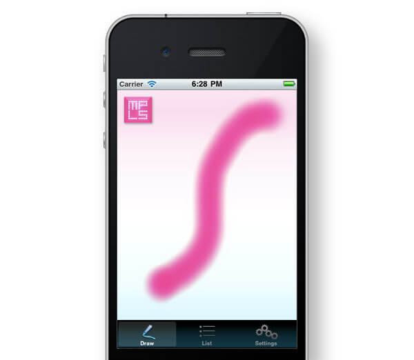
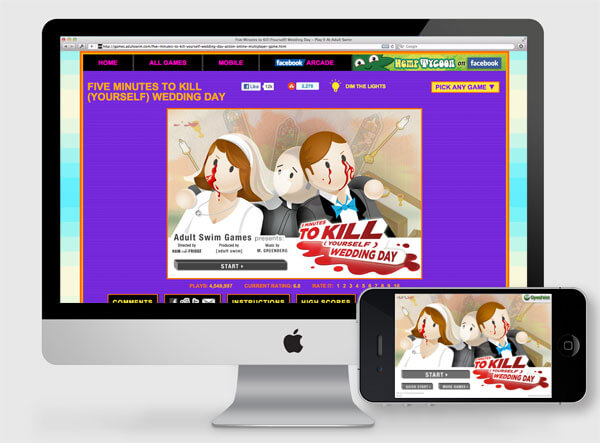
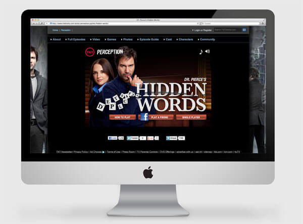

MPLSArt iOS App

This app was created for Minneapolis art review blog MPLSArt.com as a way for users to access the site's content on an iPhone. Users can browse art events in a list view or use the app's drawing feature to create their own “Art” onto which event thumbnails populate. View Online
On this project I used Objective-C to create a native iOS experience.
Five Minutes to Kill Yourself: Wedding Day

This game is the third in Adult Swim's successful the Five Minutes to Kill Yourself series. Based upon the darkly humorous premise that the main character would rather die than go through with a wedding, the player's goal is to off him or herself in under five minutes (and before their opponent) using objects found around the chapel. The game was originally created in Flash and I later worked to the iOS version.View Online
On this project I used Flex, Actionscript and a SmartFox socket server to create a multi-player Flash experience for the desktop. The iOS version was created using native Objective-C and the Cocos2D library.
Dr. Pierce's Hidden Words

This anagram word game was created to promote the TNT show Perception. Players work against the clock to create as many words as they can in either single or multi-player mode. Multi-player gameplay allows users to login with Facebook and take turns playing games stored in a central database. View Online
On this project I used HTML, CSS, JavaScript and jQuery to create a web-based desktop experience that is mobile-compatible. I also used PHP, MySQL and the Facebook SDK to facilitate multi-player gameplay.
Hempel Properties Site
This property management company needed to display their properties online and provide access to documents related to each property. Enter: Wordpress. Implementing custom data types and business logic within the Wordpress CMS allowed the client to manage property data and related files through a pre-built, intuitive interface while keeping project costs low. View Online
On this project I used HTML, CSS, JavaScript, jQuery and PHP to implement the site's front-end in a custom Wordpress theme. I also created custom Wordpress plugins and filters with PHP in order to fit the admin area to the client's needs.